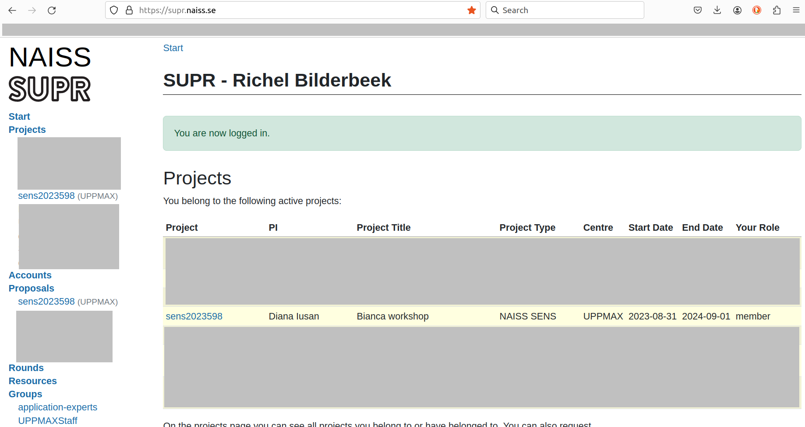
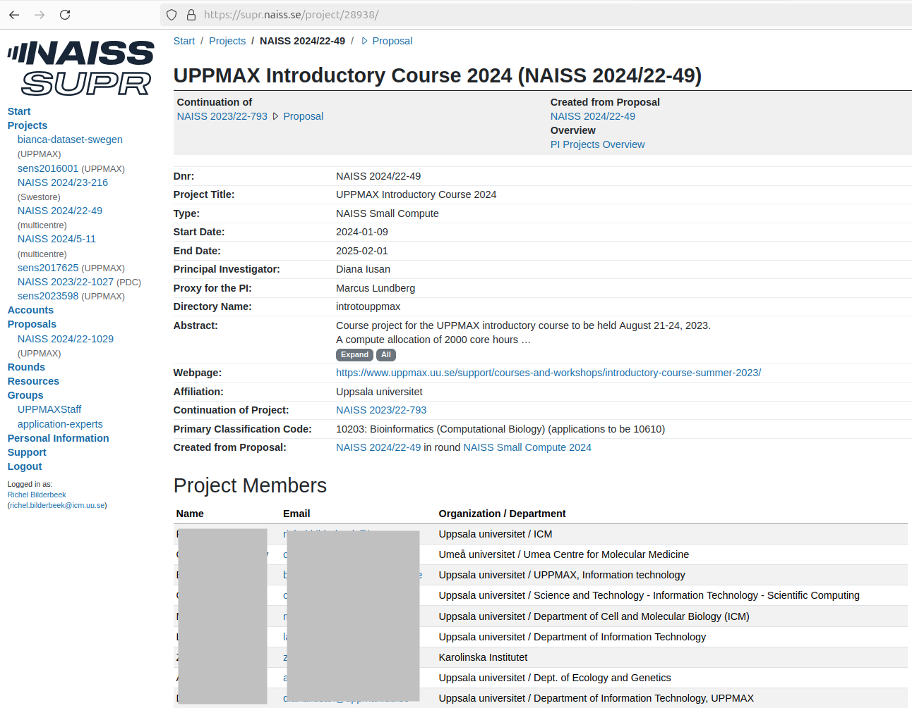

The job scheduler¶
Learning outcomes
- Practice using the UPPMAX documentation
- Can find his/her NAISS/UPPMAX projects
- Can see the job queue
- Can submit a job from the command line
- Can submit a job using a script
- Can cancel a job
For teachers
Teaching goals are:
- Learners have practiced using the UPPMAX documentation
- Learners can find their NAISS/UPPMAX projects
- Learners can see the job queue
- Learners can submit a job from the command line
- Learners can submit a job using a script
- Learners can cancel a job
Lesson plan:
gantt
title The job scheduler
dateFormat X
axisFormat %s
section First hour
Prior : prior, 0, 5s
Present: present, after prior, 2s
%% It took me 17 mins, here I do that time x2
Challenge: crit, challenge, after present, 34s
%% Here I use the same time it took me to give feedback
Feedback: feedback, after challenge, 17sPrior questions:
- What is a job?
- What is a job scheduler?
- Why does one need a job scheduler?
- What information may one need to tell a job scheduler?
- Is it possible to have all nodes of Pelle running your jobs?
Feedback questions:
- Why does UPPMAX have a job scheduler?
Why?¶
You want to do calculations that take a long time and use much CPU power. To do so, one needs to schedule these jobs!
This is a short introduction in how to reach the calculation nodes Wednesday afternoon is wedded to this topic!
Using the job scheduler¶
The job scheduler has multiple programs, we use a minimal set of these three:
flowchart TD
sbatch[sbatch: submit a job]
scancel[scancel: cancel a running job]
squeue[squeue: view the job queue]
sbatch --> |Oops| scancel
sbatch --> |Verify| squeueExercises¶
Need a video?
See this YouTube video that shows the solution of these exercises
Pelle works the same a Rackham in these contexts.
Exercise 1: see the job queue¶
Go to the UPPMAX documentation at https://docs.uppmax.uu.se, then answer these questions:
- Find the page on
squeue, the program to view the job queue
Answer
It can be found at https://docs.uppmax.uu.se/software/squeue/
- View all jobs in the queue
- View all your jobs in the queue
Answer
View your jobs in the queue:
You will probably see that you have zero jobs scheduled
Exercise 2: view my UPPMAX projects¶
Go to the UPPMAX documentation at https://docs.uppmax.uu.se, then answer these questions:
- Find the UPPMAX documentation page about projects
Answer
It can be found at https://docs.uppmax.uu.se/getting_started/project/
- Where does that page redirect you, to view your projects?
Answer
You are redirected to the SUPR NAISS page at https://supr.naiss.se/
- View all your projects
Answer
Here is an example of a user's SUPR projects

- View the project of this course
Answer
Here is how it looks like:

Exercise 3: submit a minimal job with Slurm parameters in the command-line¶
Go to the UPPMAX documentation at https://docs.uppmax.uu.se, then answer these questions:
- Create a minimal bash script that does something. It may or may not use a module. It does need a shebang (but go ahead and omit it to see which error occurs)!
Answer
A minimal bash script would be:
But any valid bash script with the same first line will do.
- Find the page on
sbatch, the program to submit a job to the queue
Answer
It can be found at https://docs.uppmax.uu.se/software/sbatch/
- Use
sbatchto submit running your bash script to the queue
How does that look like?
Your output will look similar to this:
The number is your job number
I get an error: 'This does not look like a batch script'
Like stated at the start of this exercise, the bash script needs to have a shebang.
Running a script without a shebang such as this:
Will result in the following error:
- Use
squeueto confirm that your job is in the job queue. You may need to be fast to see it!
Answer
The easiest is:
Because the job may finish very fast, a trick is to use a semicolon to run the two command directly after each other:
The output will be similar to:
Exercise 4: submit a minimal job with Slurm parameters in the bash script¶
Go to the UPPMAX documentation at https://docs.uppmax.uu.se, then answer these questions:
- Find the page on
sbatchagain
Answer
It can be found at https://docs.uppmax.uu.se/software/sbatch/
- Modify your bash script in such a way that it can be submitted to the
queue by
sbatch my_script.sh, by putting the-Aparameter in the script
Answer
Here is an example minimal script:
(Optional) Exercise 5: cancel a job¶
Go to the UPPMAX documentation at https://docs.uppmax.uu.se, then answer these questions:
- Find the page on
scancel
Answer
It can be found at https://docs.uppmax.uu.se/software/scancel/
- Schedule a job and cancel it
Answer
You output will be similar to this:
- (optional) Schedule a job that takes 1 days, 2 hours, 3 minutes and 4
seconds and cancel it.
Use
the Slurm documentation on
sbatch